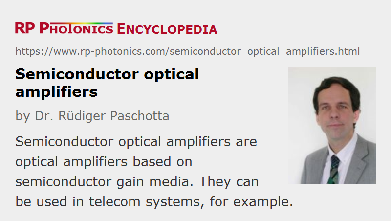

Semiconductor Optical Amplifiers
Acronym: SOA
Definition: optical amplifiers based on semiconductor gain media
More general term: optical amplifiers
German: optische Halbleiterverstärker
Categories: optical amplifiers, lightwave communications
How to cite the article; suggest additional literature
Author: Dr. Rüdiger Paschotta
A semiconductor optical amplifier is an optical amplifier based on a semiconductor gain medium. It is essentially like a laser diode where the end mirrors have been replaced with anti-reflection coatings; a tilted waveguide can be used to further reduce the end reflectivities. The signal light is usually sent through a semiconductor single-mode waveguide with transverse dimensions of e.g. 1–2 μm and a length of the order of 0.5–2 mm. The waveguide mode has significant overlap with the active (amplifying) region, which is pumped with an electric current. The injection current creates a certain carrier density in the conduction band, allowing for optical transitions from the conduction band to the valence band. The gain maximum occurs for photon energies slightly above the band gap energy.
In principle, one can also use a semiconductor optical amplifier where the end reflectivities are not minimized. One has to operate such a Fabry–Pérot amplifier (FP amplifier) slightly below the laser threshold; in that regime, the output power depends strongly on the input power, i.e., one obtains a high effective signal gain. However, the available optical bandwidth is then very small, and the occurrence of strong reflections may be detrimental to the system in which such a device is used. For these reasons, in most cases one uses traveling-wave amplifiers, where the end reflectivities are suppressed as far as possible.
The amplification is intrinsically polarization-sensitive, but amplifier designs have been developed which provide nearly polarization-independent characteristics. For example, one may use two identical amplifiers in series, where the second one is rotated against the first one by 90°. There are also configurations with two parallel amplifiers for the two polarization directions, with polarizing beam splitters before and after these amplifiers. Another possibility is to use a double pass through a single amplifier, where there is a Faraday rotator between the device and the reflecting mirror.
SOAs can be used in telecom systems in the form of fiber-pigtailed components (with either normal single-mode fibers or polarization-maintaining fibers), operating at signal wavelengths near 1.3 μm or 1.5 μm, and offering a gain of up to ≈ 30 dB, limited essentially by amplified spontaneous emission (ASE). The strong gain saturation in SOAs can be a problem for some applications, but it can also be exploited for nonlinear signal processing in telecom systems – for example, for channel translation in a wavelength division multiplexing system.
Comparison with Erbium-doped Fiber Amplifiers
The technology of semiconductor amplifiers competes with that of erbium-doped fiber amplifiers (EDFAs). The main differences compared with EDFAs are:
- The setup is much more compact, containing only a small semiconductor chip with electrical and fiber connections. A compact housing may even contain additional polarization-insensitive Faraday isolators at the input, output, or both ports.
- The output powers are substantially smaller, particularly when comparing with high-power fiber amplifiers.
- The required operation power is also smaller; typical drive currents a few hundred milliamperes.
- The gain bandwidth can be similar. Devices operating in different wavelength regions can be made.
- The upper-state lifetime and thus the stored energy are much smaller, so that the gain reacts to changes in pump power or signal power within nanoseconds (instead of milliseconds). Changes in gain also cause phase changes (→ linewidth enhancement factor).
- SOAs exhibit much stronger nonlinear distortions in the form of self-phase modulation and four-wave mixing. These are often unwanted, but can also be used e.g. for optical signal processing (see below).
- The noise figure is typically higher.
- The amplification is intrinsically polarization-dependent, as far as that is not avoided with special designs (see above).
Tapered Amplifiers
Although most SOAs are fairly limited in output power, there are tapered devices which are optimized for high output powers – hundreds of milliwatts or even several watts. The amplification begins in a single-mode waveguide of limited transverse dimensions, and the waveguide area is expanded along the propagation direction.
Vertical-cavity SOAs
A special type of SOAs is that of the vertical-cavity SOA (VCSOA). This is very similar to a vertical cavity surface-emitting laser, but the top mirror reflectivity is reduced so that the laser threshold is not reached. The still significant top reflectivity is required for obtaining a reasonably high gain, since the single-pass gain through a few quantum wells is fairly low, but it also reduces substantially the gain bandwidth. Comparing with standard edge-emitting SOAs, VCSOAs can be made significantly smaller and cheaper, and can be operated with lower drive currents. (Typically, the order of 10 mA should be sufficient for 20 dB of gain.) Also, they can be fabricated in arrays.
Application in Channel Translation
Amplification is actually not the only application of SOAs: there are also applications in optical fiber communications based on nonlinearities such as gain saturation, or a kind of cross-phase modulation, which is associated with changes in the refractive index via the carrier density in a SOA. Such effects can be used for channel translation (wavelength conversion) in wavelength division multiplexing systems, for modulation format conversion, clock recovery, signal regeneration, and pattern recognition.
Suppliers
The RP Photonics Buyer's Guide contains 14 suppliers for semiconductor optical amplifiers. Among them:
Questions and Comments from Users
Here you can submit questions and comments. As far as they get accepted by the author, they will appear above this paragraph together with the author’s answer. The author will decide on acceptance based on certain criteria. Essentially, the issue must be of sufficiently broad interest.
Please do not enter personal data here; we would otherwise delete it soon. (See also our privacy declaration.) If you wish to receive personal feedback or consultancy from the author, please contact him e.g. via e-mail.
By submitting the information, you give your consent to the potential publication of your inputs on our website according to our rules. (If you later retract your consent, we will delete those inputs.) As your inputs are first reviewed by the author, they may be published with some delay.
Bibliography
| [1] | N. A. Olsson, “Lightwave systems with optical amplifiers”, IEEE J. Lightwave Technol. 7 (7), 1071 (1989), doi:10.1109/50.29634 |
| [2] | C. Schubert, R. Ludwig, and H.-G. Weber, “High-speed optical signal processing using semiconductor optical amplifiers”, J. Opt. Fiber Commun. Rep. 2, 171–208 (2004), doi:10.1007/s10297-005-0036-2 |
| [3] | W. Loh et al., “Noise figure of Watt-class ultralow-confinement semiconductor optical amplifiers”, IEEE J. Quantum Electron. 47 (1), 66 (2011), doi:10.1109/JQE.2010.2085422 |
| [4] | M. J. Conelly, Semiconductor Optical Amplifiers, Springer, 1st edn., 2002 |
| [5] | B. E. A. Saleh and M. C. Teich, Fundamentals of Photonics, John Wiley & Sons, Inc., New York (1991) |
| [6] | P. Urquhart (ed.), Advances in Optical Amplifiers (open-access online edition available), InTech, Rijeka, Croatia (2011) |
See also: optical amplifiers, erbium-doped fiber amplifiers, semiconductor lasers, laser diodes, tapered amplifiers
and other articles in the categories optical amplifiers, lightwave communications
|  |
If you like this page, please share the link with your friends and colleagues, e.g. via social media:
These sharing buttons are implemented in a privacy-friendly way!